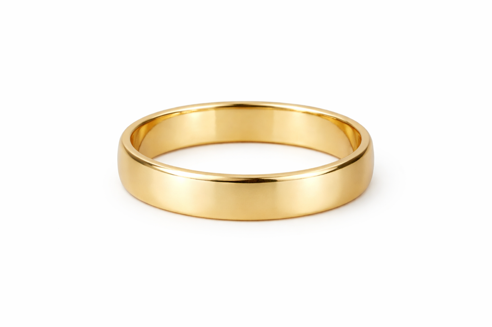

Cinematic AR · iOS & Android
Try the piece on. Right now.
Hold your phone to your face. Watch the piece sit on your skin in real time, lit by your room's light. Every solitaire renders in its true cut. Every gold tone matches its real karat.
1
Allow camera
One-time, runs locally — no images leave your phone.
2
Pick a piece
Tap any of our pieces from the strip below.
3
Save the cinemagraph
Share to anyone before you decide. Lifetime free.